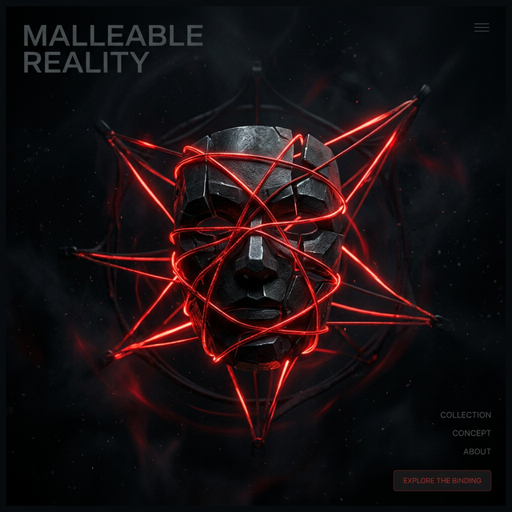

The Mask of Identity
Dive into our interactive learning module. Explore the fluid nature of identity, the process of objectifying your thoughts, and how to transcend reflexive habits.

The Cosmic Organism
Explore the universe as a massive, self-regulating body. Understand how adaptation laws scale from the microscopic to the cosmic, and how your local state resonates through the whole.